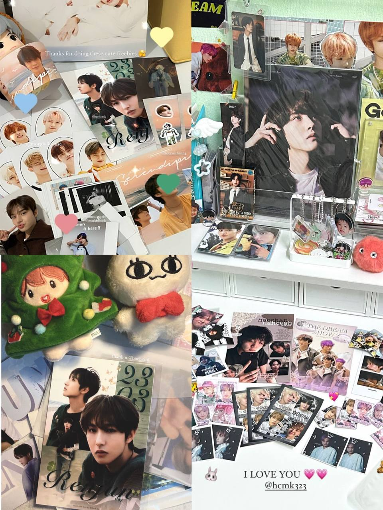
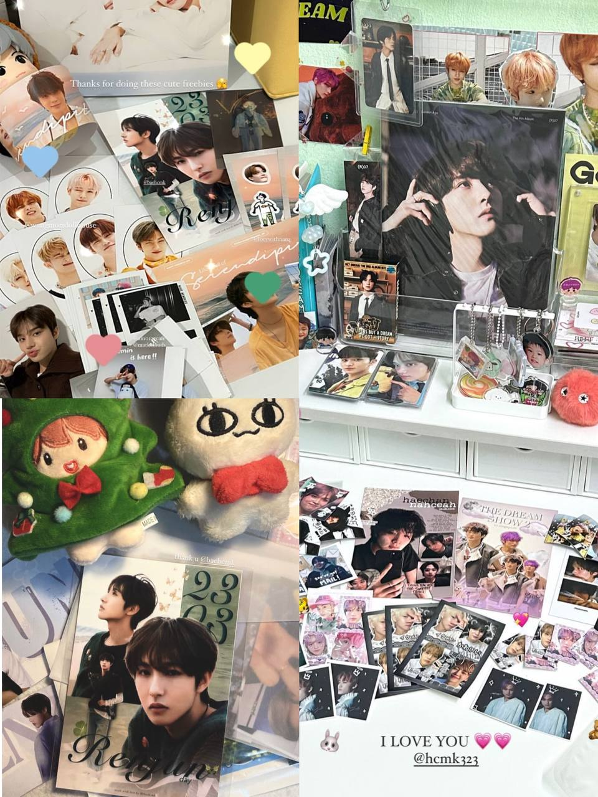

In my free time, I enjoy using my design skills to create unique postcards for events I attend. From conceptualizing the artwork to crafting the final product, I put care and creativity into each design to make them stand out. It's always rewarding to see the positive reactions from people—my postcards are so popular they’re usually gone within the first 30 minutes! This experience not only allows me to share my passion for design but also reinforces my ability to create visually appealing work that resonates with others.
Tool(s) used: IbisPaint X